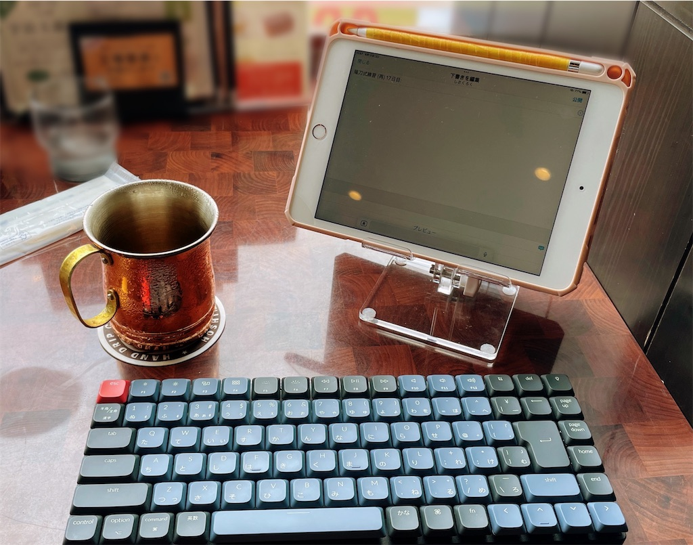
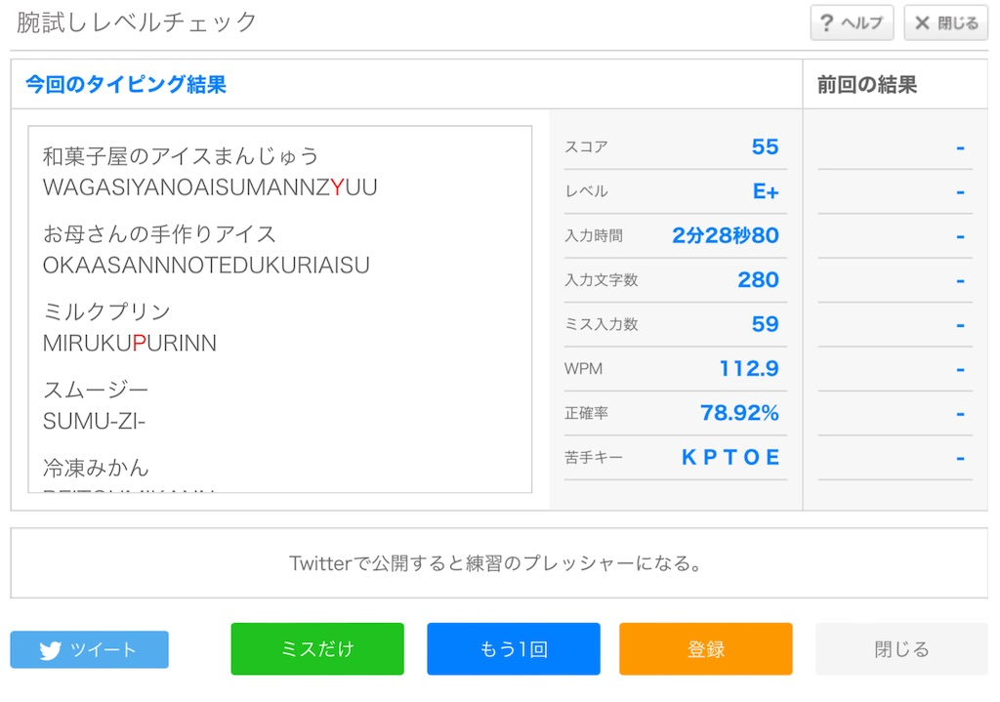
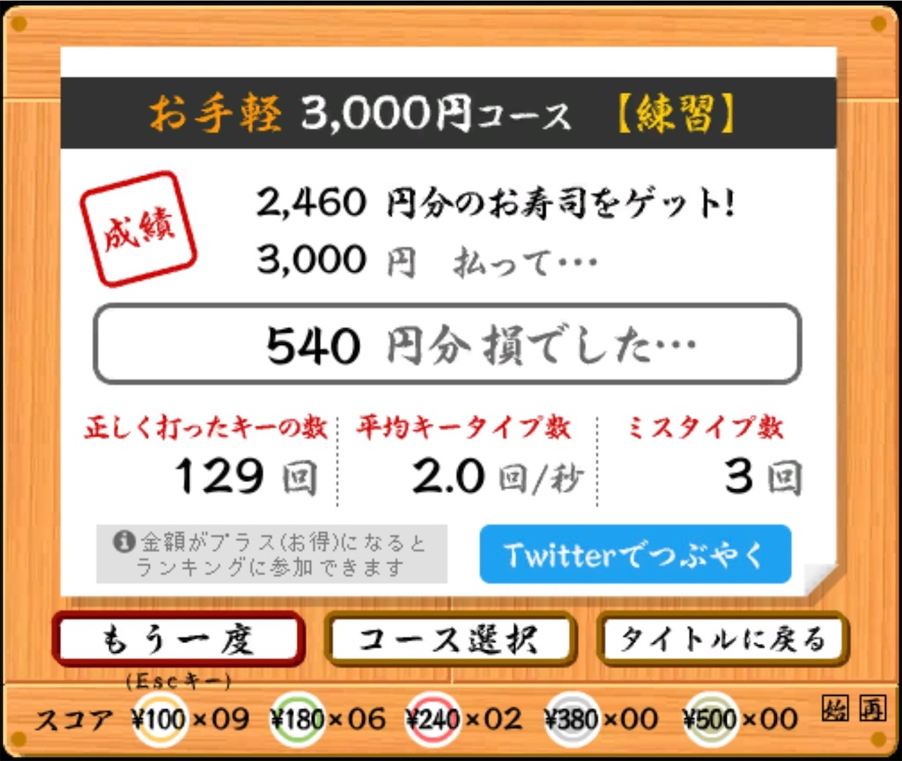

  
だんだんとまとまった文章が打てるようになってきて、薙刀式がだんだん楽しく実用的になってきた。
ただKeychron K3 Proを実用するようになって気になり始めてきたことが、このキーボードはJISと認識されるときとUSと認識されるときとがあるようで、どちらに認識されるかで記号の扱いが変わってしまうので少し困っている。今のところMacではUS、iPadではUS・JIS (たまに)、iPhoneではJISと認識されていて、どうすれば認識させる配列を変更できるのかは今のところ不明。
……それはまぁさておき、薙刀式の配列の楽しさはだんだんとわかってきた。まだ本格的に高速でタイピングするレベルには全く到達していないものの、それでも薙刀式 (v14) が持っているポテンシャルはだんだんと理解できてきたし、将来的には高速打鍵にも十分耐えうる感じはしていて、ただ練習量と期間だいぶかかるだろうなという予感はしている。
配列練習の期間に対しての伸び率自体は高いのかなと思ったりするものの、他に打鍵できる実用的な配列があるせいでそちらを普段は使うので、あえて練習時間をとらないと伸びないのがそろそろネックになってきた気がする。
配列自体はとても楽しいので、17日目にもなってくると実機なしで空で頭で練習してもさほど苦にはならないレベルにはなってきたけれど、でもまだシナプスが上手く繋がっていないのか、実際の打鍵速度がさほどついてきていないのがちょっとだけ残念。
あと不思議なことに、薙刀式と新下駄の配列的共通点は意外に多くあって、それが久々に打つときなんかにお互いの混乱の元になったりはする。これはDvorakからAstarteに移ったときにも体験したので、やはり同じかな配列同士なので仕方ないかなという感じ。
でもやっぱり楽しさというのは薙刀式が一番あるような感じはしていて、このペースで練習していけば、新下駄配列よりも速く打てたり、いっそのこと置き換えてしまう日も来るかもしれないとさえ思う。
薙刀式、新下駄、もしどちらも同レベルに習熟するときがきたら、打鍵比較動画なんかも作ってみたい。
それにしてもカフェで気ままにiPadとキーボードだけで文字打ちができるというのは本当に最高。好きなコーヒーを飲みながら外の風景を見つつ過ごすのが、一番癒されるし、生産性も高い気すらする。（カフェで隣から聞こえる雑談とか、食器の擦れる音とか、なんとなくオシャレなBGMとか、音も好きだったりする。）